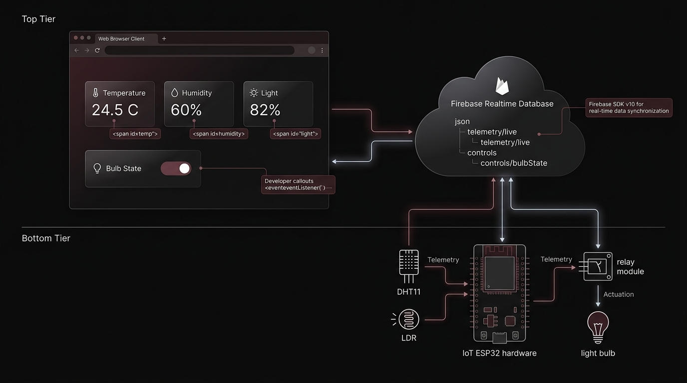
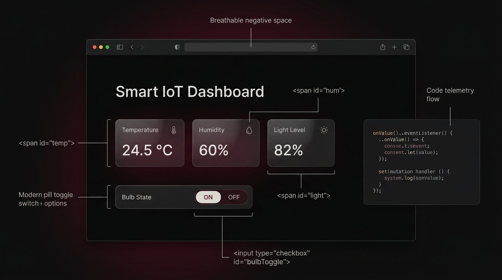

Task 04: Firebase Realtime Web Dashboard
1. Overview
The purpose of this fourth task was to engineer a browser-based IoT monitoring and control dashboard powered by Firebase Realtime Database and hosted on Firebase Hosting.
The web application displays live environmental telemetry—specifically Temperature, Humidity, and Light Level—and provides a real-time binary toggle switch for an electrical Bulb.
The frontend connects directly to Firebase using the official Firebase JavaScript SDK. Using reactive onValue() event listeners, the dashboard subscribes to real-time changes under the telemetry/live and controls/bulbState nodes. When the user flips the bulb toggle, the client writes 1 (ON) or 0 (OFF) back to the cloud database using set().
By utilizing a cloud-hosted database as the intermediary communication layer, the web dashboard and embedded hardware do not require direct peer-to-peer network connections. Firebase functions as the synchronized cloud state repository bridging the browser and the IoT physical tier.
2. What I Was Trying to Build
The primary engineering objective was to construct an interactive, responsive web portal where a user can view live sensor readings and issue actuator control commands without needing direct local access to the microcontroller hardware:
Crucially, the browser is not asserting direct control over a GPIO pin or hosting an embedded HTTP server. Instead, it mutates a synchronized key in a cloud database. Firebase acts as the centralized meeting point between the web application and the IoT hardware layer.
3. Learning Objectives
- Create and configure a Google Firebase cloud project for IoT integration.
- Set up and initialize a Firebase Realtime Database instance.
- Understand how a cloud-hosted NoSQL JSON database functions as an IoT messaging and state layer.
- Design an organized database tree separating telemetry payloads from control parameters.
- Integrate the modular Firebase JavaScript SDK v10 into a vanilla web application.
- Implement asynchronous event-driven listeners using
onValue()to receive live cloud pushes. - Mutate cloud database values deterministically using
set()based on user interactions. - Maintain bidirectional UI synchronization between the checkbox element and stored database state.
- Deploy a static web application to a global CDN using the Firebase CLI and Firebase Hosting.
- Validate and debug cloud-to-frontend synchronization independently before connecting physical hardware.
- Differentiate telemetry data collection from discrete actuator control flows.
- Understand the architectural purpose and security implications of Firebase database rules.
4. Complete System Architecture
The end-to-end architecture establishes Firebase Realtime Database as the shared state repository between the web frontend and the embedded IoT system:

The database separates operational data into two unidirectional data flows:
telemetry/live → onValue() → Web Dashboard Cards
set() → Firebase controls/bulbState → ESP32 / Relay → Bulb Output
Important: The web browser never initiates a direct network connection to the ESP32. All telemetry reads and control writes are brokered entirely through Firebase.
5. Components & Software
firebase-app.js and firebase-database.js), providing onValue() and set() primitives.6. Firebase Database Structure
The database schema is intentionally structured as a shallow JSON tree with distinct partitions for incoming telemetry and outgoing control directives:
Segregating data into telemetry/live and controls/bulbState provides key engineering benefits:
- Granular Listener Scopes: The sensor cards only listen to changes in
telemetry/live, preventing unnecessary UI recalculations when a control parameter changes. - Write Isolation: Web users write strictly to the
controlsnode, eliminating the risk of accidental overwrites to sensor telemetry paths. - Simplified Hardware Parsing: When the ESP32 fetches the actuator state, it reads a single primitive integer (
1or0) rather than deserializing large nested documents.
7. Web Dashboard Architecture
The frontend client architecture is built on standard web technologies without external framework dependencies:

Standard HTML structure defines the visual elements, vanilla CSS enforces presentation, and native ES modules manage asynchronous communication with Firebase.
8. Firebase JavaScript SDK
The application imports the modern modular Firebase JavaScript SDK (v10) directly via CDN script tags:
The core SDK functions fulfill specific roles:
initializeApp(config): Initializes the Firebase app instance using project API configuration parameters.getDatabase(app): Returns a Realtime Database reference bound to the project instance.ref(db, path): Constructs a deterministic reference pointer to a designated database URL path.onValue(ref, callback): Establishes a persistent real-time listener that invokes a callback whenever the data at the path changes.set(ref, value): Writes data to the specified database location, completely overwriting the value at that path.
9. Real-Time Sensor Updates
Live telemetry display is managed by a single reactive subscription attached to the telemetry/live reference:
- Data Ingestion: The IoT system writes updated numerical values to
telemetry/live. - Cloud Push: Firebase immediately broadcasts the updated JSON payload over the existing WebSocket socket to connected browsers.
- Callback Execution: The
onValue()callback fires on the client. - Snapshot Extraction:
snapshot.val()parses the payload into a JavaScript object containingtemperature,humidity, andlight. - DOM Update: The script targets element IDs (
temp,hum,light) and updates their text content directly.
This reactive event model eliminates periodic client-side polling and manual page reloads: the UI updates instantly whenever the cloud value changes.
10. Bulb Control
Actuator switching is implemented with a dedicated database pointer to controls/bulbState:
The toggle logic establishes a fully synchronized control loop:
- User Writes to Cloud: When the user clicks the checkbox, the
changeevent listener fires. If checked,set(bulbRef, 1)writes1; if unchecked,set(bulbRef, 0)writes0. - Cloud Confirms to UI: Because
onValue()listens tobulbRef, any state change—whether made by this browser, an external device, or the Firebase Console—immediately syncs the checkbox'scheckedproperty.
11. Complete Data Flow
The dashboard coordinates two independent data directions across the cloud layer:
12. Implementation Process
- Create Firebase Project: Created a new project in the Firebase Console named
smart-iot-dashboard. - Register Web Application: Registered the web client to generate the project's
firebaseConfigcredentials object (API key, project ID, database URL). - Initialize Realtime Database: Provisioned a Realtime Database instance in the project console and confirmed the location endpoint.
- Construct Frontend Layout: Created
index.htmlwith cards for Temperature, Humidity, and Light level, and an HTML checkbox for the bulb toggle. - Integrate Firebase SDK: Imported
firebase-app.jsandfirebase-database.jsinside an ES module script. - Attach Telemetry Listener: Attached an
onValue()listener totelemetry/liveto automatically parse and render incoming sensor values. - Attach Control Listener: Bound
onValue()tocontrols/bulbStateto maintain checkbox synchronization with the database state. - Attach Control Mutation Handler: Added a
changeevent listener to the checkbox, executingset(bulbRef, checked ? 1 : 0). - Console Validation Testing: Verified communication by manually altering numbers in the Firebase Console and verifying browser UI updates.
- Production Deployment: Initialized Firebase Hosting using the Firebase CLI and executed
firebase deployto launch the public dashboard.
The deployed application is publicly accessible at: Smart Home Dashboard.
Demonstration Media
Photographic verification of the Firebase Realtime Database schema, live dashboard interface, and actuator testing:


13. Testing & Verification
A structured verification protocol was carried out to ensure the stability of the cloud-to-frontend synchronization pipeline:
- Test 1 — Firebase Connection Initialization: Navigated to the hosted dashboard; verified that the client successfully opened a WebSocket connection to the Firebase Realtime Database without console errors.
- Test 2 — Temperature Telemetry Update: Manually changed
telemetry/live/temperaturein the Firebase Console to26.8. Confirmed that the dashboard's temperature display changed to26.8without a page reload. - Test 3 — Humidity Telemetry Update: Changed
telemetry/live/humidityto65.2. Verified that the humidity card updated immediately. - Test 4 — Light Level Telemetry Update: Changed
telemetry/live/lightto45.0. Verified that the light card reflected the updated percentage. - Test 5 — Bulb State Synchronization (ON): Manually edited
controls/bulbStatein the database to1. Verified that the dashboard toggle checkbox switched to checked. - Test 6 — Bulb State Synchronization (OFF): Edited
controls/bulbStateto0. Confirmed that the checkbox unchecked immediately. - Test 7 — Browser-Initiated Write Command: Clicked the bulb toggle in the browser. Verified that the Firebase Console tree reflected an instantaneous mutation to
1(when checked) or0(when unchecked). - Test 8 — Hardware-Independent Web Verification: Confirmed that the entire web frontend and cloud data tier functioned flawlessly prior to physical embedded hardware integration.
14. Database Rules
Database security rules control which clients possess permission to read from or write to specific paths in the Firebase Realtime Database tree.
Configuration Notes: [[FILL: describe your rules]]. Database rules determine whether clients can read and write data openly or whether stricter path-based constraints are enforced. In development, open read/write rules facilitate rapid prototyping, but production IoT architectures should restrict client writes strictly to authorized paths such as controls/bulbState while reserving telemetry updates for authenticated microcontroller nodes.
15. Deployment with Firebase Hosting
The web application was deployed to production using Firebase Hosting, an SSD-backed global hosting platform:
It is critical to distinguish the two Firebase services deployed in this task:
16. Testing Without Hardware
A fundamental engineering strength of this architecture is independent frontend verification:
By simulating sensor updates directly in the Firebase Console, the web application's communication logic, DOM rendering, and error handling were verified in isolation. This decoupled workflow ensures that when hardware integration begins in Task 5, frontend anomalies have already been eliminated.
17. Task 3 vs Task 4
Comparing the architectural differences between voice-triggered cloud automation and database-driven web dashboards:
| Dimension | Task 3 — Voice & Cloud Automation | Task 4 — Firebase Web Dashboard |
|---|---|---|
| Primary User Interface | Acoustic Spoken Voice (Google Assistant) | Graphical Web Dashboard (Browser) |
| Input Device | Smartphone Microphone | Desktop / Mobile Web Browser |
| Integration Bridge | IFTTT Rules Engine | Firebase JavaScript SDK |
| Cloud Intermediary | Adafruit IO (MQTT Broker) | Firebase Realtime Database (NoSQL JSON) |
| Communication Pattern | Publish-Subscribe over Port 1883 | WebSocket Event Synchronization |
| Client Role | ESP32 acts as MQTT Subscriber | Web app acts as Database Client |
| System Scope | Voice → Cloud → Hardware | Browser → Cloud Database → IoT System |
Task 4 shifts the cloud paradigm from specialized message queuing (MQTT) to a centralized, shared cloud database that serves as a single source of truth for both web clients and connected microcontrollers.
18. Complete Frontend Code
<!DOCTYPE html>
<html lang="en">
<head>
<meta charset="UTF-8">
<meta name="viewport" content="width=device-width, initial-scale=1.0">
<title>Smart IoT Dashboard</title>
</head>
<body>
<h1>Smart IoT Dashboard</h1>
<p>Temperature: <span id="temp">--</span> °C</p>
<p>Humidity: <span id="hum">--</span> %</p>
<p>Light level: <span id="light">--</span> %</p>
<label><input type="checkbox" id="bulbToggle"> Bulb</label>
<script type="module">
import { initializeApp } from "https://www.gstatic.com/firebasejs/10.12.0/firebase-app.js";
import { getDatabase, ref, onValue, set } from "https://www.gstatic.com/firebasejs/10.12.0/firebase-database.js";
const firebaseConfig = {
apiKey: "YOUR_API_KEY",
authDomain: "YOUR_PROJECT.firebaseapp.com",
databaseURL: "https://YOUR_PROJECT-default-rtdb.firebaseio.com",
projectId: "YOUR_PROJECT"
};
const app = initializeApp(firebaseConfig);
const db = getDatabase(app);
const telemetryRef = ref(db, "telemetry/live");
const bulbRef = ref(db, "controls/bulbState");
// Live sensor values
onValue(telemetryRef, (snapshot) => {
const d = snapshot.val();
if (!d) return;
document.getElementById("temp").textContent = d.temperature;
document.getElementById("hum").textContent = d.humidity;
document.getElementById("light").textContent = d.light;
});
// Keep the toggle in sync with the database
onValue(bulbRef, (snapshot) => {
document.getElementById("bulbToggle").checked = snapshot.val() === 1;
});
// Send the toggle change to the database
document.getElementById("bulbToggle").addEventListener("change", (e) => {
set(bulbRef, e.target.checked ? 1 : 0);
});
</script>
</body>
</html>19. Code Breakdown
initializeApp(firebaseConfig)getDatabase(app)ref)telemetry/live and controls/bulbState targeting specific nodes in the JSON tree.onValue)snapshot.val())temperature, humidity, and light.getElementById and immediately assigns the latest numbers to textContent.snapshot.val() === 1 and updates bulbToggle.checked, ensuring the UI reflects the true cloud state.set)1 or 0), committing mutations to the cloud database.20. Key Learnings
onValue().21. Final Result
The finished project delivers a fast, responsive, and reliable web dashboard for IoT monitoring and actuation:
The dashboard successfully displays live environmental values without manual page reloads, and flipping the bulb toggle writes 1 or 0 directly to the cloud database. The static frontend is deployed and running live on Smart Home Dashboard.
22. Task 04 Takeaway
The central takeaway of Task 4 is the power of decoupling user interfaces from embedded hardware using cloud databases as shared state abstractions:
- Web Dashboard: Responsible solely for rendering visual components and capturing user intent.
- Firebase SDK: Responsible for maintaining network sockets and synchronizing data packets.
- Firebase Realtime Database: Responsible for persisting cloud state and broadcasting changes to subscribers.
- IoT / ESP32 Tier: Responsible for reading physical sensors and driving electrical actuators.
Neither end needs to understand the internal workings of the other: the browser does not need to know GPIO pin mappings, and the microcontroller does not need to know DOM structures. Firebase provides the universal bridge between them.
23. Why This Architecture Matters
Tracing the progression across the IoT Week tasks reveals the evolution of modern connected systems:
Task 4 completes the software tier of the IoT portfolio, creating the cloud database and web portal that seamlessly connects with the multi-sensor embedded hardware constructed in Task 5.